Abstract:
- Probability Ranking Principle
- Binary Independence Model
Why probabilities in IR?
-
In traditional IR systems, matching between each document and query is attempted in a semantically imprecise space of index terms.
-
Probabilities provide a principled foundation for uncertain reasoning
-
Idea: Rank by probability of relevance of the document w.r.t. information need
- P(relevant|documenti, query)
Recall a few probability basics
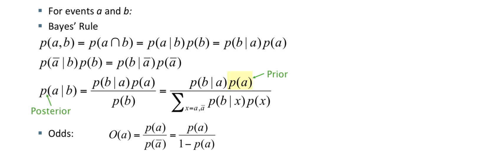
Probability Ranking Principle
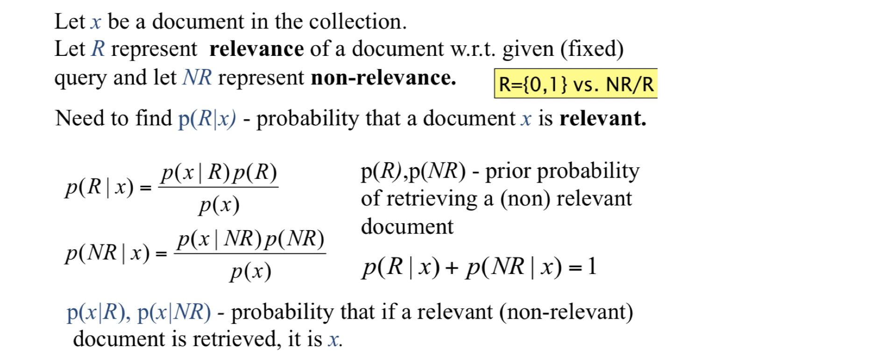
-
Bayes’ Optimal Decision Rule: x is relevant iff p(R|x) > p(NR|x)
-
PRP in action: Rank all documents by p(R|x)
-
Theorem:
- Using the PRP is optimal, in that it minimizes the loss (Bayes risk) under 1/ 0 loss
- Provable if all probabilities correct, etc.
-
Probability Ranking Principle: if
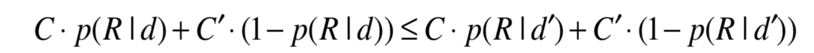
- for all d’ not yet retrieved, then d is the next document to be retrieved,
- d - document,
- C - cost of retrieval of relevant document,
- C’ - cost of retrieval of non-relevant document
Questionable assumptions
- “Relevance” of each document is independent of relevance of other documents.
- Really, it’s bad to keep on returning duplicates
- Boolean model of relevance
- That one has a single step information need
- Seeing a range of results might let user refine query
Binary Independence Model
-
Traditionally used in conjunction with PRP
-
“Binary” = Boolean: documents are represented as binary incidence vectors of terms (cf. lecture 1):
-
x=(x1,…,xn )
-
xi = 1 iff term i is present in document x.
-
“Independence”: terms occur in documents independently
-
Different documents can be modeled as same vector
-
Bernoulli Naive Bayes model (cf. text categorization!)
-
Under the BIM, we model the probability P(R|d, q) that a document is relevant via the probability in terms of term incidence vectors P(R|x, q). Then, using Bayes rule, we have:
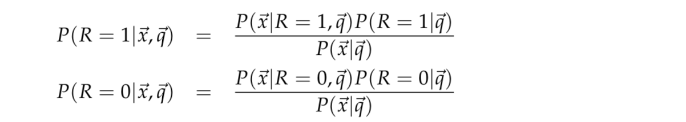
- Here, P(x|R = 1,q) and P(x|R = 0, q) are the probability that if a relevant or nonrelevant, respectively, document is retrieved, then that document’s representation is x.
Deriving a ranking function for query terms
-
Queries: binary term incidence vectors
-
Given query q,
- for each document d need to compute p(R|q,d).
- replace with computing p(R|q,x) where x is binary term incidence vector representing d Interested only in ranking
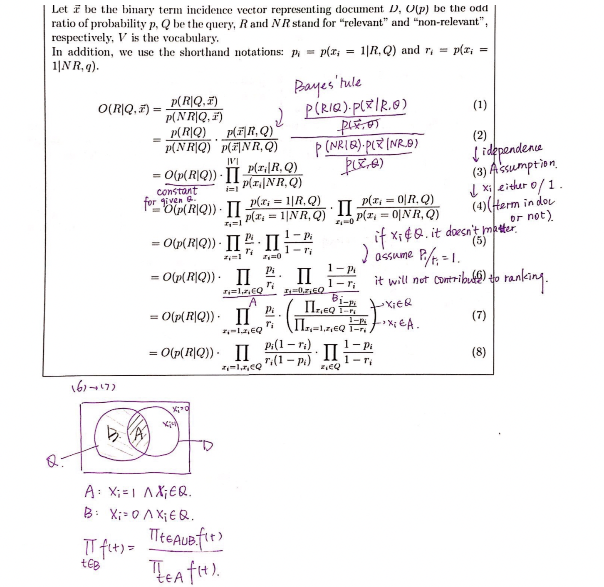
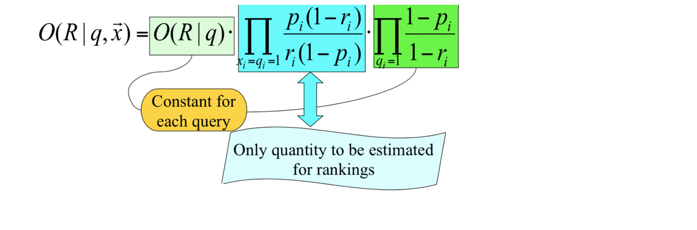
-
Retrieval Status Value:
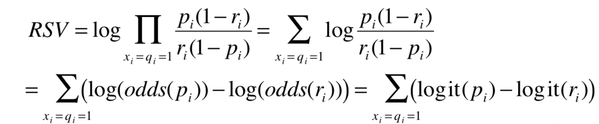
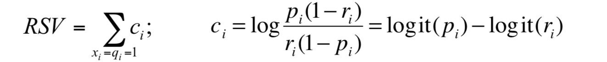
Probability estimates in theory
- For each term i look at this table of document counts:
- n = dft : number of documents which contains t
- log (1– ri)/ri = log (N– n)/n ≈ log N/n = IDF!
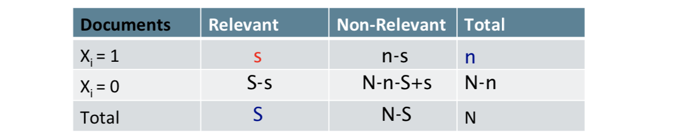
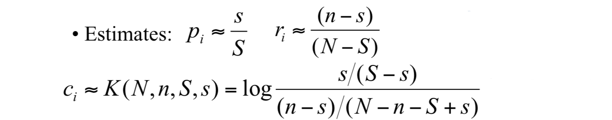
- This estimate could be 0, so add 1⁄2 Smoothing
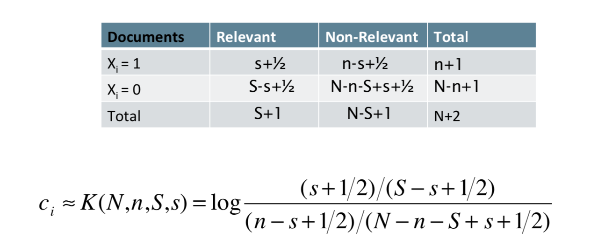
Okapi BM25
- Heuristically extend the BIR to include information of term frequencies, document length, etc.
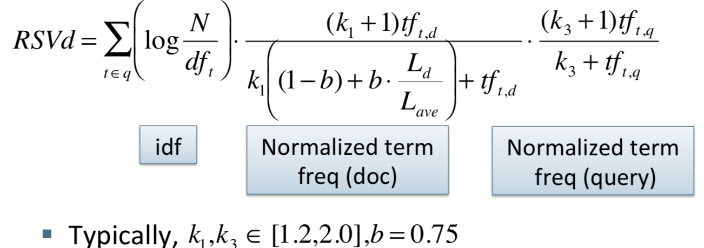